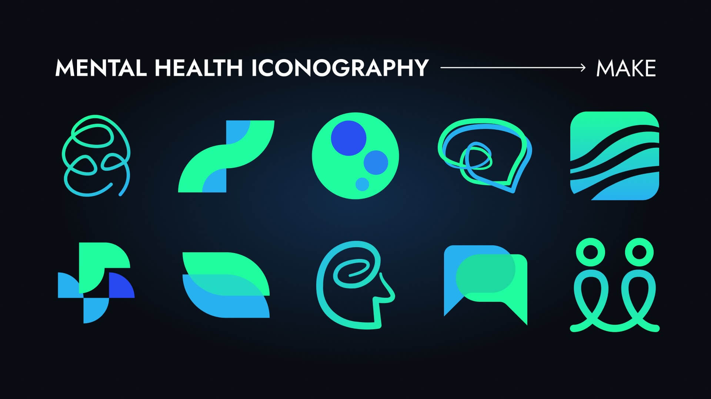
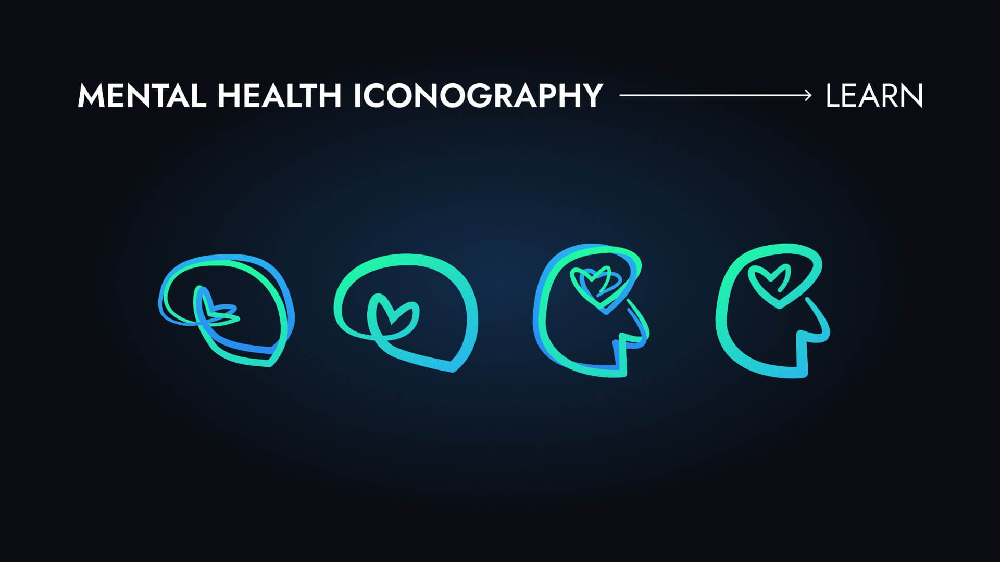
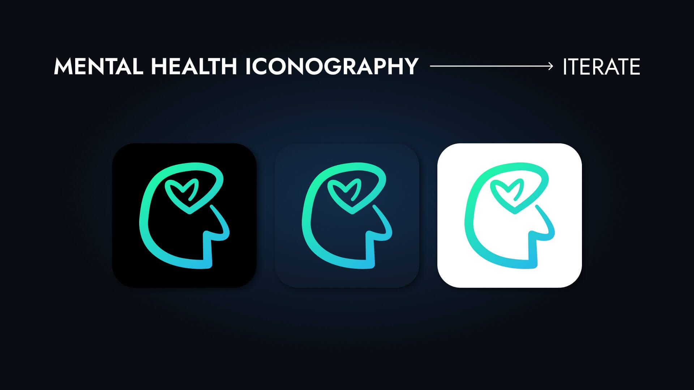

Mental Health App Logo Design
Project Information
- Category: Logo Design, Visual Identity
- Tools: Figma
- Year: 2025
Project Overview
A logo design trial for a mental health companion app concept. I used the NHS Design Principles as a guiding framework and worked through make, learn, and iterate phases to arrive at a final mark.

Design Process
The brief had specific tonal constraints: signal health without feeling clinical, feel supportive without being childish, and avoid anything visually heavy for an audience that may already be in a difficult state.

I explored brain and heart imagery, messaging as a visual element, and colour as the primary tone carrier. The final mark combines a brain-heart form with a teal-to-blue gradient. Teal sits between the clinical associations of blue and the warmth of green, which made it the right fit for a mental health context. Early directions pushed further into literal brain imagery or abstract iconography that leaned towards harmony and communication.

Final Takeaway
Designing under tight tonal constraints for a sensitive audience sharpens every decision. Colour, form, and weight all carry meaning that lands differently depending on the emotional state of the person looking at it.